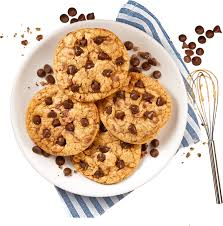

O Cookie da Malu nasceu da paixão por doces artesanais feitos com amor e dedicação. Aqui você encontra cookies crocantes por fora, macios por dentro, preparados com ingredientes selecionados para oferecer uma experiência única a cada mordida.
Diferenciais
- Ingredientes de Alta Qualidade
- Feitos com Carinho
- Produção diária e entregas rápidas